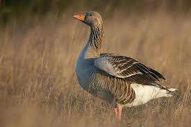
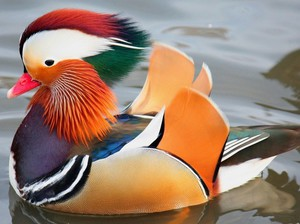

|
Виды птиц
|
Курообразные |
Разновидность куропаток
|
Гусеобразные |
 |  |
|
К этому виду относятся:
|
В отряде гусеобразных встречаются птицы крупной и средней величины. Самый крупный ныне живущий представитель отряда — лебедь-шипун, достигающий массы 13 кг. Самым мелким является чирок-свистунок, который весит около 200—300 г. Крупнейшие представители вымершего семейства Dromornithidae достигали 3 м в высоту и 500 кг массы[2]. Как правило, гусеобразные обладают увесистым телом, длинной шеей и сравнительно небольшой головой. За исключением паламедей, гусеобразные имеют широкий и плоский клюв, на кончике которого часто находится затвердение — ноготок, облегчающее срывание листвы и растительного материала. По бокам края клюва зубчатые пластинки образовывают своеобразное решето, позволяющее фильтровать съедобные частицы из воды. Особенно они развиты у крохалей, которые благодаря этим зубчикам могут удерживать в клюве пойманную рыбу. |
Одной из самых красивых уточек является мандаринка. На картинке выше представлена особь
мужского пола
Признаки мандаринки
|
|||
|
Самое большое количество среди этого отряда составляют куропатки |
Большинство представителей отряда моногамны. У некоторых видов пары образуются на всю жизнь, и участие в
воспитании потомства принимают оба родителя; однако у большинства видов гусеобразных пары образуются
только на один сезон, причём самец никакого участия в насиживании и кормлении птенцов не принимает.
Гнёзда гусеобразных расположены у водоёмов, в береговых зарослях, кустах и в тростнике (некоторые
гнездятся в дуплах, в земляных норах или на островках). Как правило, гнездо изнутри выстлано пухом,
который самка выдёргивает из своего живота.
|
||||
Берегите птиц!!! |
Гусеобразные, или пластинчатоклювые — отряд новонёбных птиц, в который наряду с такими птицами, как гуси, утки, лебеди, входят и более экзотические семейства (например, паламедеи из Южной Америки). Виды отряда широко распространены и играют большую роль в биосфере умеренных широт Земли. Некоторые виды гусеобразных имеют важное сельскохозяйственное значение. |
||||